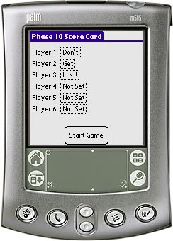

Phase 10 Score Card is an electronic scorecard for the card game Phase 10 by Ravensburger Spielverlag.
If you would like to localize Phase 10 Score Card to another language, Drop me a mail.
Phase 10 Score Card runs on any Palm OS 3.1 or better device.
v2.3 (2007-04-11) Fixed a bug which made PXSc crash on v3.1-v3.5 devices (and possibly also other devices). v2.2 (2007-01-08) Change a bug in the way scores were handled. Added checkmark next to phase number if a phase is completed for a given player. v2.1 (2007-01-03) Updated english phase names to match those given on http://en.wikipedia.org/wiki/Phase_10#Phases In game screen redesigned so it uses all available space. "About" added to the in game menu. v2.0 (2006-12-25) Added support for 5 way navigation. Added keyboard. Changed to LMake build system. Changed a bit in the icons. v1r2 (2005-04-19) You can now export the final scores to Memo pad. v1r1 (2004-08-17) Initial release of Phase 10 Score Card.